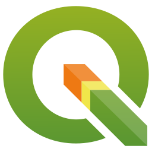
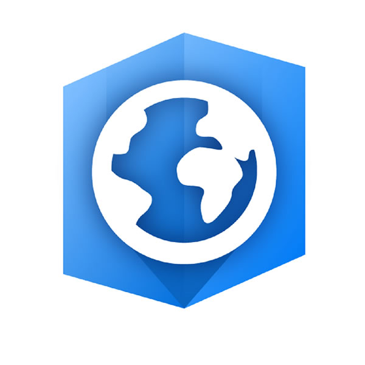
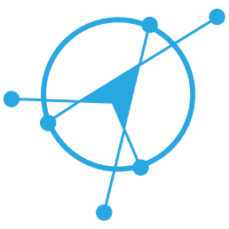
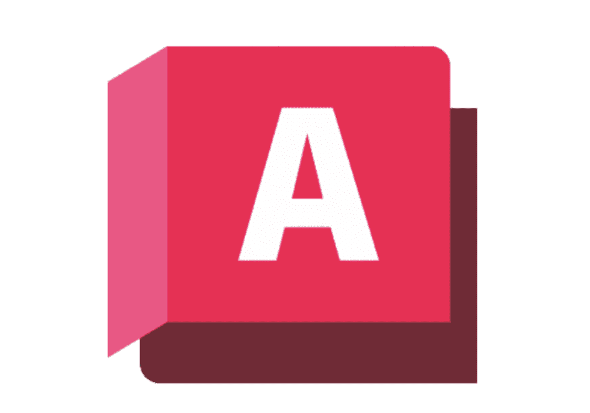

01 — Academic Background
Academic background
My academic path has centered on GNSS coordinate processing and geospatial analysis, from comparing PPP and network-based solutions across the Kendeng Fault to building out GIS-based spatial analysis, hydrography, and photogrammetry work. I'm drawn to the point where precise positioning meets applied geospatial problems, and I like working across the full range of tools rather than narrowing in on just one.
Master of Geomatics Engineering
Tesis: Analysis of GNSS Coordinate Solutions using Precise Point Positioning and Network-based Processing Methods.
Bachelor of Geodetic Engineering
Final Project: Vertical Deformation Analysis of The Northern Coastal of Central Java using GNSS CORS And InSAR Data.
SOFTWARE & TOOLS

QGIS
ArcGIS Pro GAMIT/GLOBK
GAMIT/GLOBK
PRIDE PPP-ARGlobal Mapper

AutoCAD Python
Python PostgreSQL
PostgreSQLMapbox
SketchUp